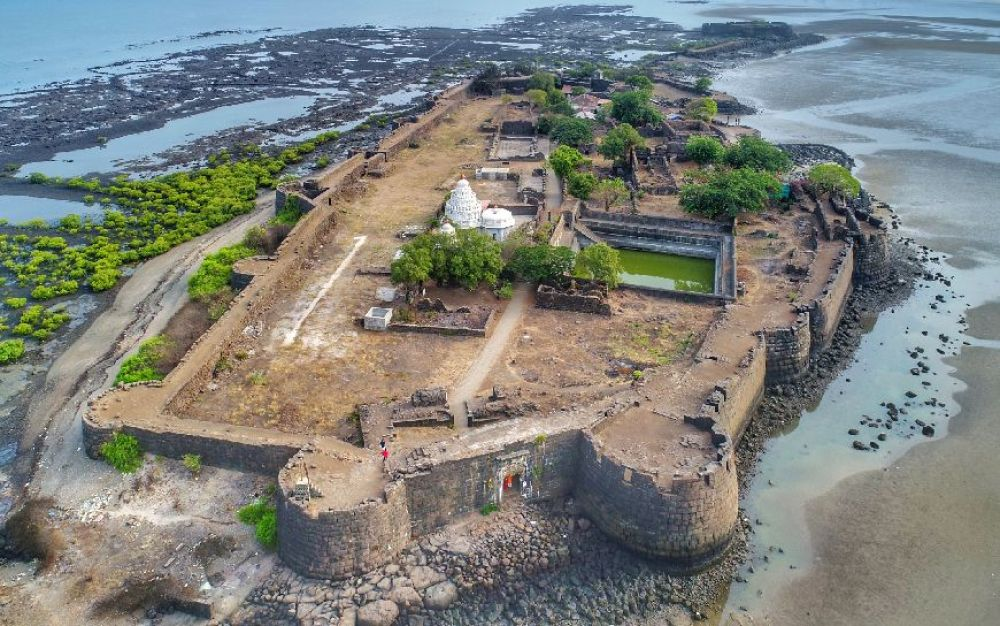
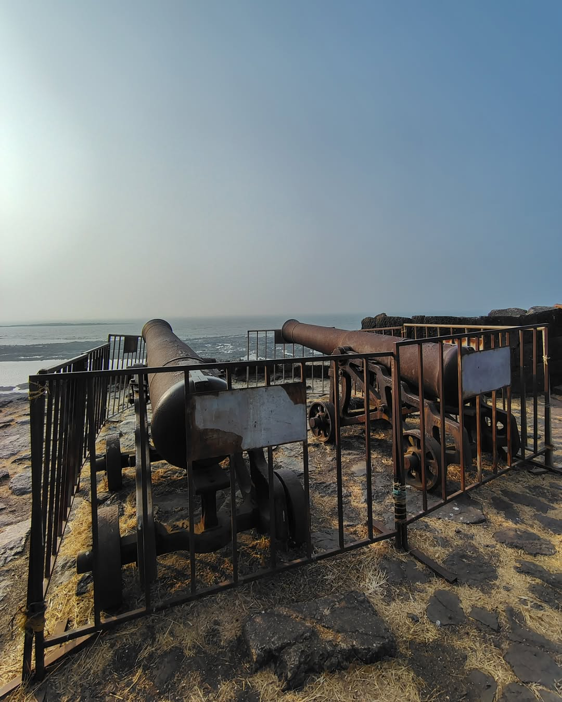
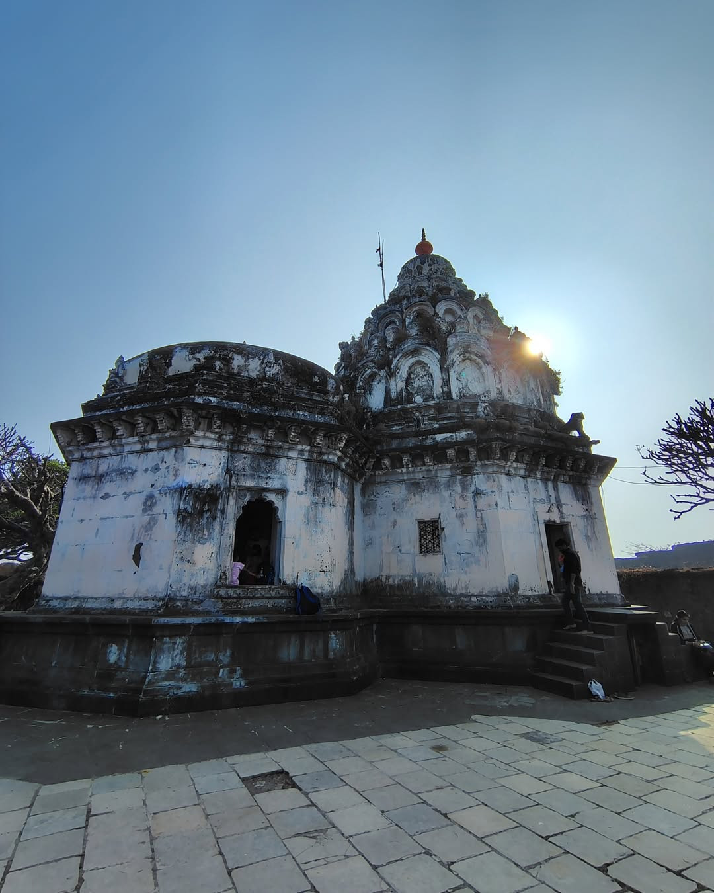
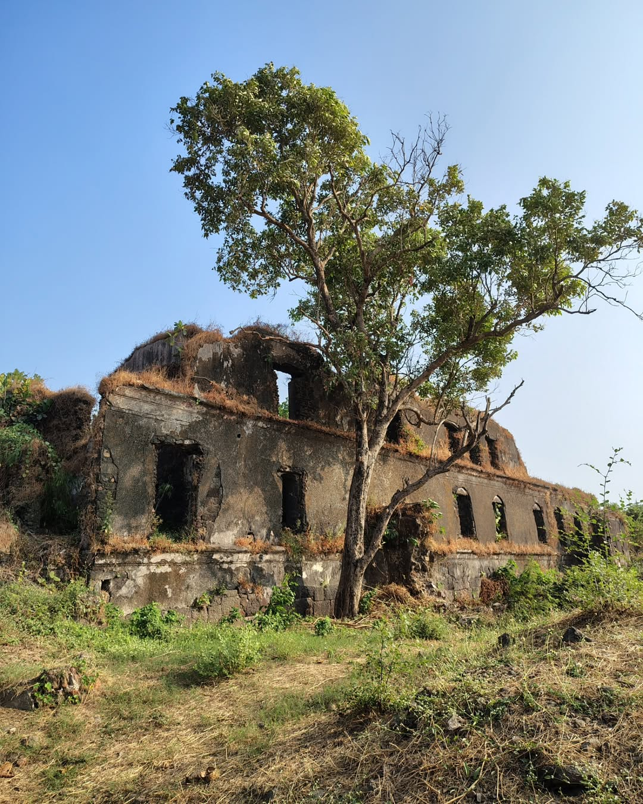
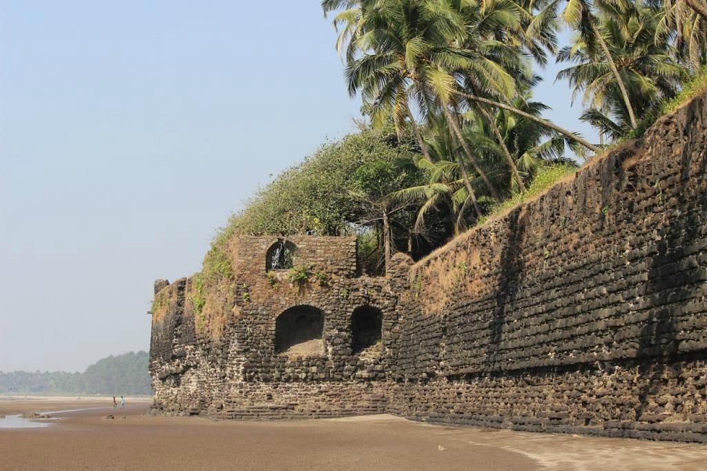
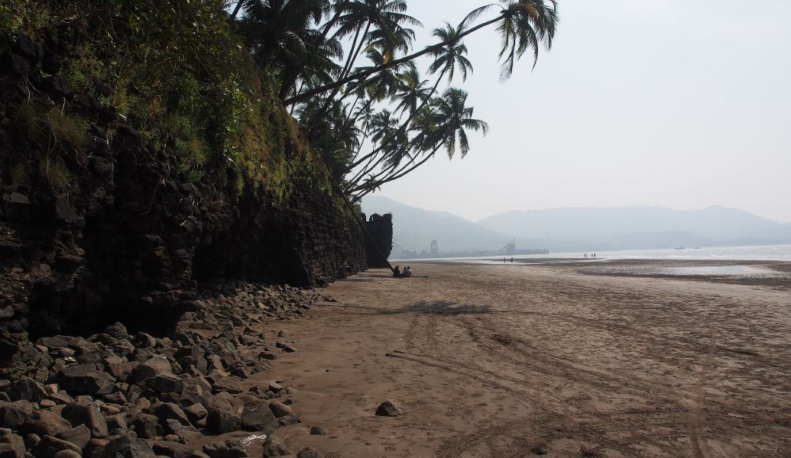
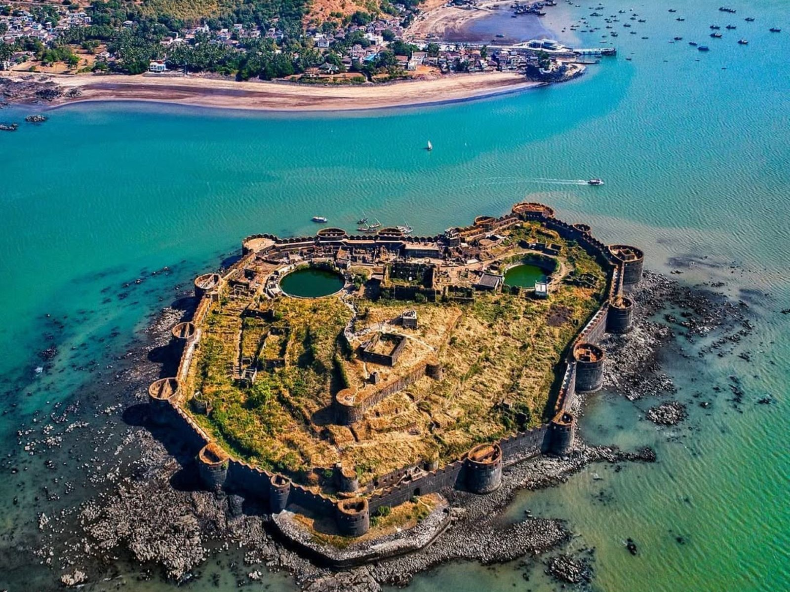

Kolaba Fort




Kolaba Fort, a magnificent 17th-century coastal stronghold, stands as a prominent symbol of Maratha maritime prowess near the coastal town of Alibag in Maharashtra. Commissioned by the visionary Maratha ruler Chhatrapati Shivaji Maharaj, this fortification played a pivotal role in safeguarding the Maratha Empire's western coast from naval threats and foreign invasions. Constructed with the expertise of skilled architects and engineers, Kolaba Fort reflects the brilliance of Maratha military architecture and underwent several enhancements during Chatrapati Shivaji's reign. Strategically located just 2 kilometers off the Alibag shoreline, Kolaba Fort is encircled by the Arabian Sea, making it accessible only during low tide. Its sturdy stone walls and bastions, stretching over 600 meters, exemplify its robust defense system, many of which have stood the test of time. The fort’s integration with the surrounding natural landscape, coupled with its strategic location, made it an impregnable bastion against enemy forces.One of the fort's unique features is its freshwater wells, a remarkable achievement for a sea fort, ensuring a consistent water supply for its inhabitants. The fort also houses a temple dedicated to Lord Ganesha, which remains a place of worship to this day, adding a spiritual dimension to its historical significance. Inside the fort complex, visitors can find remnants of residential quarters, granaries, and military storage, which highlight its self-sustaining design.
The fort is accessible only during low tide via a causeway or boats, making it a unique maritime structure with limited accessibility during high tide, adding to its mystique and security during its prime

The fort’s design harmonizes with its natural surroundings, using locally sourced materials and leveraging the coastal landscape for enhanced defense and aesthetic appeal.

The fort still houses remnants of granaries, residential quarters, and artillery storage, offering insights into the daily lives of its occupants and the fort’s operational significance.

The Ganesh Temple within Kolaba Fort is one of its most cherished features, reflecting the cultural and spiritual values of the Maratha Empire. Dedicated to Lord Ganesha, the deity of wisdom and prosperity, the temple remains a well-preserved structure, attracting devotees and tourists alike. Built with traditional architecture, the temple houses a beautifully sculpted idol of Lord Ganesha, which is believed to have been installed during the reign of Chhatrapati Shivaji Maharaj. Even today, the temple continues to be a place of worship, particularly bustling during the Ganesh Chaturthi festival when it becomes a hub of religious activity.

The granaries and storage areas within the fort underline its logistical and operational preparedness. These facilities were designed to store large quantities of food, grains, and other essential supplies. The remnants of these storage areas reflect the Maratha Empire's advanced planning for both military and civilian needs, showcasing the fort’s self-sufficiency. The granaries were strategically located within the fort to safeguard supplies from enemy raids and natural elements, ensuring the longevity of stored provisions. Their design also facilitated easy access and distribution, enabling efficient management during both peacetime and conflict.

Distance: 2 km
Alibaug Beach is one of the most popular beaches in the region. This wide, sandy beach offers a perfect mix of relaxation and activity, with opportunities to enjoy water sports, horse rides, and ATV rides. The beach provides stunning views of Kolaba Fort, especially during low tide when the fort is accessible.

Distance: 17 km
Revdanda Fort is a historical gem with Portuguese origins. Built in the 16th century, this fort is known for its partially ruined walls, old cannons, and a rich blend of Portuguese and Maratha architectural styles.It also has historical significance as a trade and military post during its time.

Distance: 17 km
Revdanda Beach lies just adjacent to the Revdanda Fort. This tranquil beach is less crowded, making it an ideal getaway for those seeking solitude. It is known for its black sand, coconut palms, and a peaceful ambiance.

Distance: 54 km
Murud-Janjira Fort is a majestic sea fort located near the coastal town of Murud in Maharashtra. Known as one of the strongest marine forts in India, it stands on an oval-shaped rocky island about 500 meters offshore.Murud-Janjira offers a blend of history, architecture, and scenic beauty.